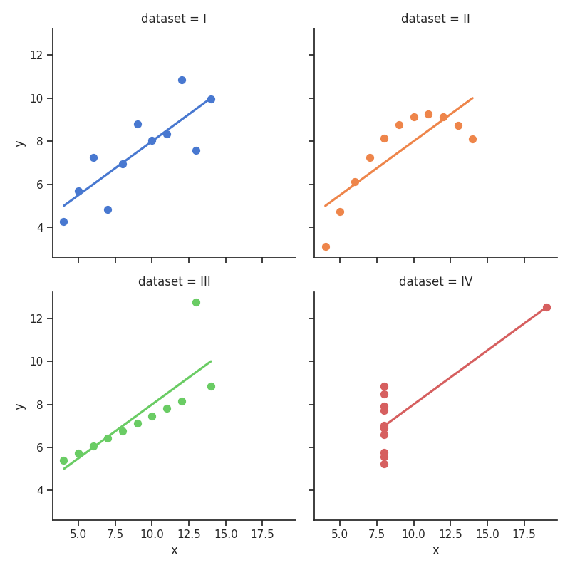

Images
Code
import matplotlib.pyplot as plt
import numpy as np
import seaborn as sns
from mkreports import Report
from PIL import Image
from plotnine import aes, facet_wrap, geom_point, ggplot, stat_smooth
from plotnine.data import mtcars
def use_images(report: Report) -> None:
"""
Show all different ways on how we can include images.
"""
p = report.page("usage/images.md", truncate=True)
# we don't need an indentation for everything if we don't want
p.H1("Images")
p.CollapsedCodeFile(__file__)
p.H2("Supported formats")
p.Raw(
"""
Mkreports supports inclusion out of the box of a number of different imaging
libraries. For each supported library, an example is show below.
For any not supported library, it is still possible to write out the
image manually and then include it as an `ImageFile` object.
"""
)
with p.H3("PIL"):
p.Raw(
"""
PIL is the standard python image library. `Image` objects are written
out to files and included in the markdown.
Here as an example we simply have a black and white image of a black
and grey square.
"""
)
img_np = np.zeros((200, 400), dtype=np.uint8)
img_np[:, 200:400] = 128
img = Image.fromarray(img_np)
p.PIL(img)
with p.H3("Matplotlib"):
p.Raw(
"""
For many scientific graphing purposes, `matplotlib` is either the direct
choice or the backend being used for plotting.
"""
)
fig, ax = plt.subplots()
ax.plot([1, 2, 3, 4], [1, 4, 2, 3])
p.Image(fig)
with p.H3("Plotnine"):
p.Raw(
"""
Any plots created by `plotnine` can be included directly. The code below
is from the beginner example of the library.
"""
)
p.Image(
ggplot(mtcars, aes("wt", "mpg", color="factor(gear)"))
+ geom_point()
+ stat_smooth(method="lm")
+ facet_wrap("~gear"),
)
with p.H3("Seaborn"):
p.add(
"""
Another well known option is Seaborn. The interface is similar to the
ones before. Under the hood, the `figure` attribute of the seaborn plot is
accessed and saved in the same fashion as for matplotlib.
"""
)
sns.set_theme(style="ticks")
# Load the example dataset for Anscombe's quartet
df = sns.load_dataset("anscombe")
# Show the results of a linear regression within each dataset
p.Image(
sns.lmplot(
x="x",
y="y",
col="dataset",
hue="dataset",
data=df,
col_wrap=2,
ci=None,
palette="muted",
height=4,
scatter_kws={"s": 50, "alpha": 1},
),
)
with p.H3("Altair"):
import altair as alt
import pandas as pd
source = pd.DataFrame(
{
"a": ["A", "B", "C", "D", "E", "F", "G", "H", "I"],
"b": [28, 55, 43, 91, 81, 53, 19, 87, 52],
}
)
p.Altair(
alt.Chart(source).mark_bar().encode(x="a", y="b").properties(width=600)
)
with p.H3("Plotly"):
import plotly.express as px
fig = px.scatter(x=[0, 1, 2, 3, 4], y=[0, 1, 4, 9, 16])
p.Plotly(fig)
p.H2("Different image sizes")
p.P(
"""
In order to change the size of the image, use the width
and height parameters. But please note that ultimately,
the number of pixels determines the size - i.e. doubling height
and width while halfing dpi does not change the size, but
internally how it is rendered may change.
"""
)
with p.H3("Plotnine"):
p.H4("Larger")
p.Image(
ggplot(mtcars, aes("wt", "mpg", color="factor(gear)"))
+ geom_point()
+ stat_smooth(method="lm")
+ facet_wrap("~gear"),
width=10,
height=6,
)
p.H4("Smaller")
p.Image(
ggplot(mtcars, aes("wt", "mpg", color="factor(gear)"))
+ geom_point()
+ stat_smooth(method="lm")
+ facet_wrap("~gear"),
width=5,
height=3,
)
Supported formats
Mkreports supports inclusion out of the box of a number of different imaging libraries. For each supported library, an example is show below.
For any not supported library, it is still possible to write out the
image manually and then include it as an ImageFile object.
PIL
PIL is the standard python image library. Image objects are written
out to files and included in the markdown.
Here as an example we simply have a black and white image of a black and grey square.
docs/staging/images.py | |
|---|---|
33 34 35 36 37 38 39 40 41 42 43 44 45 | |
Matplotlib
For many scientific graphing purposes, matplotlib is either the direct
choice or the backend being used for plotting.

docs/staging/images.py | |
|---|---|
49 50 51 52 53 54 55 56 57 58 | |
Plotnine
Any plots created by plotnine can be included directly. The code below
is from the beginner example of the library.

docs/staging/images.py | |
|---|---|
61 62 63 64 65 66 67 68 69 70 71 72 73 | |
Seaborn
Another well known option is Seaborn. The interface is similar to the
ones before. Under the hood, the figure attribute of the seaborn plot is
accessed and saved in the same fashion as for matplotlib.

docs/staging/images.py | |
|---|---|
76 77 78 79 80 81 82 83 84 85 86 87 88 89 90 91 92 93 94 95 96 97 98 99 100 101 102 103 | |
Altair
docs/staging/images.py | |
|---|---|
106 107 108 109 110 111 112 113 114 115 116 117 118 | |
Plotly
docs/staging/images.py | |
|---|---|
121 122 123 124 | |
Different image sizes
In order to change the size of the image, use the width and height parameters. But please note that ultimately, the number of pixels determines the size - i.e. doubling height and width while halfing dpi does not change the size, but internally how it is rendered may change.
Plotnine
Larger

Smaller

docs/staging/images.py | |
|---|---|
139 140 141 142 143 144 145 146 147 148 149 150 151 152 153 154 155 156 | |